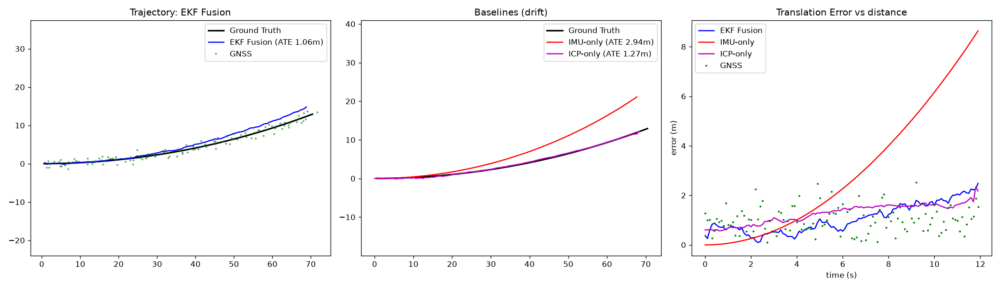
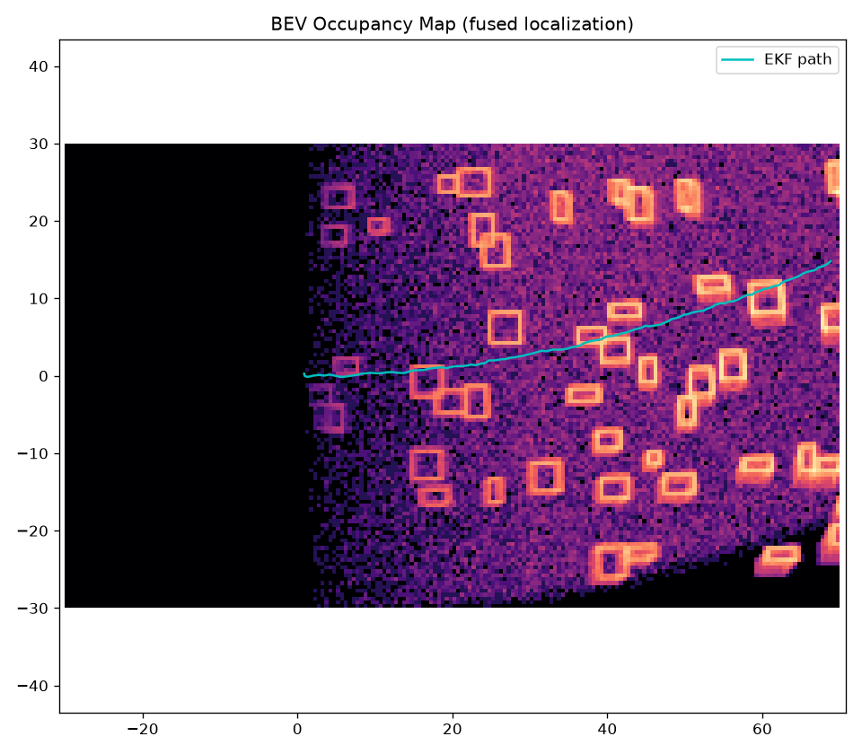
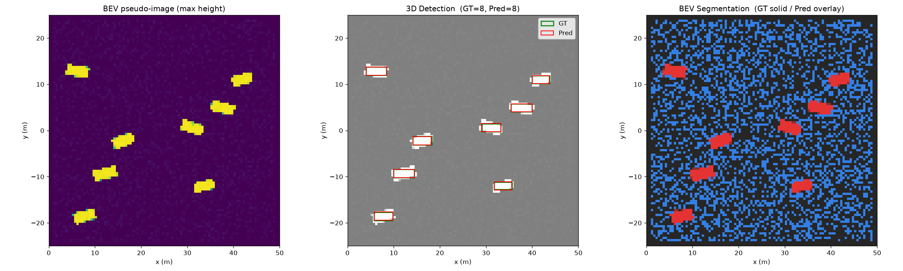

刘慧琪 · 智能驾驶算法作品集
两个 从零手搓 的项目——不依赖 mmdet3d / OpenPCDet / Open3D / ROS，把量产工程经验落到可运行代码。
方向：BEV 3D 检测 / 感知 + 多传感器融合定位（SLAM / 里程计）
PyTorch 手写
BEV 感知
ICP 配准
EKF 融合
LiDAR+IMU+GNSS
可上 GitHub
① 多传感器融合定位（SLAM / 里程计）
手写 ICP + 松耦合 EKF 融合
纯 NumPy · 零外部框架
把简历里的"L2+ 多传感器融合定位量产装车 >10 万台"落地为最小可运行原型：
IMU 死推算 + LiDAR-ICP 里程计 + GNSS，经 EKF 加权融合得到低漂移轨迹，
并把多帧点云累积成 BEV 占据地图。
2.94
IMU-only ATE (m) · 已漂移

轨迹对比：EKF 融合 vs 真值 / IMU-only / ICP-only 漂移基线

用 EKF 轨迹累积的 BEV 占据地图
- 手写 ICP：point-to-point 配准，SVD（Horn 法）求解相对位姿，含反射修正
- 松耦合 EKF：状态
[x,y,yaw,vx,vy,wy]，IMU 预测 + 位姿更新 + GNSS 更新
- BEV 建图：定位 → 多帧点云累积 → 占据地图的闭环
- 数据解耦：换成真实 .pcd / IMU 驱动 / RTK，融合核心不变
② PyTorch BEV 3D 目标检测
anchor-free Center 检测头（手写）
PyTorch · 无检测框架
补齐简历里的 DL / 检测 / 分割 / BEV 缺口：点云 → BEV 伪图像 → CNN 主干 →
检测头(有无车+3D框) ＋ BEV 语义分割头，全程手写，证明"会自己搭检测/分割头"而非只会调包。

BEV 三连图：强度图 / 3D 检测(绿=真值,红=预测) / BEV 语义分割(背景/路面/车辆)
- BEV 投影：点云栅格化为 max-height / density / intensity 三通道（同 PointPillars / CenterPoint）
- 网络：Conv+BN+ReLU 主干，5 个 block + 转置卷积上采样多尺度融合
- 多任务头：检测头（分类+回归）＋ BEV 语义分割头（背景/路面/车辆）共享主干，对应简历「分割」缺口
- 损失：Focal Loss + 正样本 Smooth-L1 回归 + 加权 CE 分割损失
- 接真实数据：替换
SynthDataset 读 KITTI/nuScenes，网络与训练不动
③ 与简历 / 求职的呼应
| 简历强项 / 缺口 | 作品集对应 | 状态 |
|---|
| LiDAR+视觉+差分 GNSS 融合定位（量产 >10 万台） | ① 融合定位项目：LiDAR(ICP)+GNSS，视觉可挂额外支路 | 已落地 |
| 国家科技进步二等奖（核心成员） | ① 融合定位即获奖方向技术底座 | 已呼应 |
| 点云特征 / 匹配 / SLAM 前端 | ① 手写 ICP 配准 | 已落地 |
| 缺口：PyTorch / 检测 / 分割 / BEV | ② 手写 BEV 多任务（检测+分割）网络 | 已补齐 |
| 缺口：现代 DL 框架工程能力 | ② 完整训练/评估/推理流水线 | 已补齐 |
| 面试深挖点 | 两个项目均可"换真实数据即用"，讲清数据/算法解耦 | 可讲 |
④ 目录结构
projects/
├── slam_fusion/ # ① 多传感器融合定位
│ ├── world.py # 真值轨迹 + 世界 + 传感器采样
│ ├── icp.py # 手写 ICP 配准 (SVD)
│ ├── fusion_ekf.py # 松耦合 EKF 融合
│ ├── bev_map.py # BEV 占据地图累积
│ ├── run.py # 全链路 + 出图
│ └── README.md
├── pytorch_3d_bev/ # ② BEV 3D 检测
│ ├── data/synthetic.py # 点云→BEV 投影 + 目标
│ ├── models/bev_detector.py # 网络 + Focal/SmoothL1 + decode
│ ├── train.py / evaluate.py / demo.py
│ └── README.md
└── portfolio/ # 本展示页
├── index.html
└── README.md